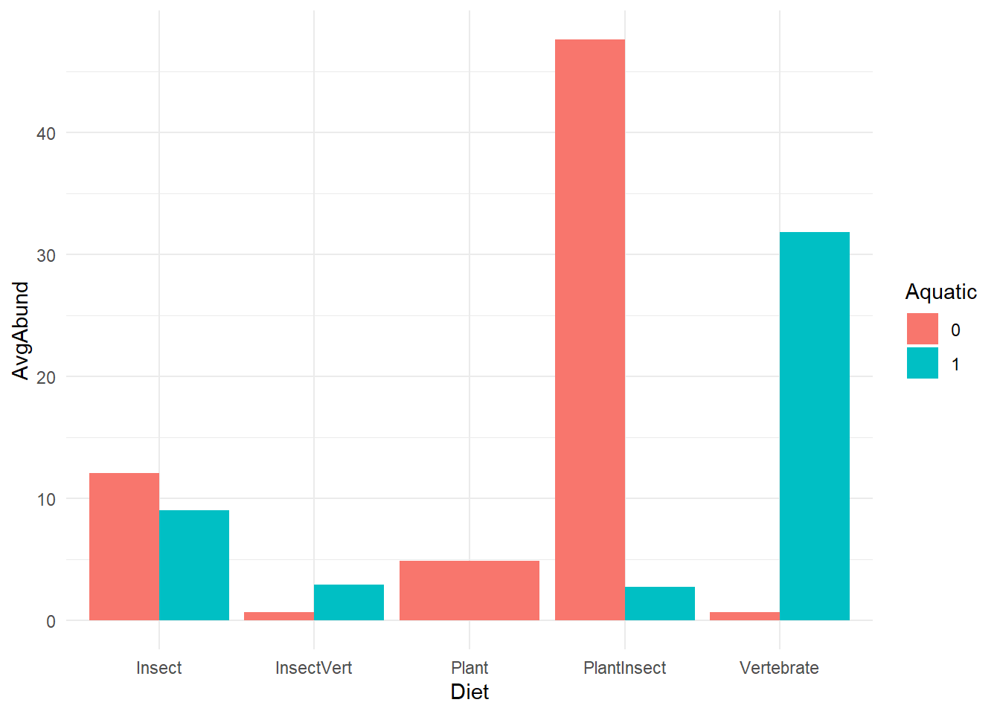
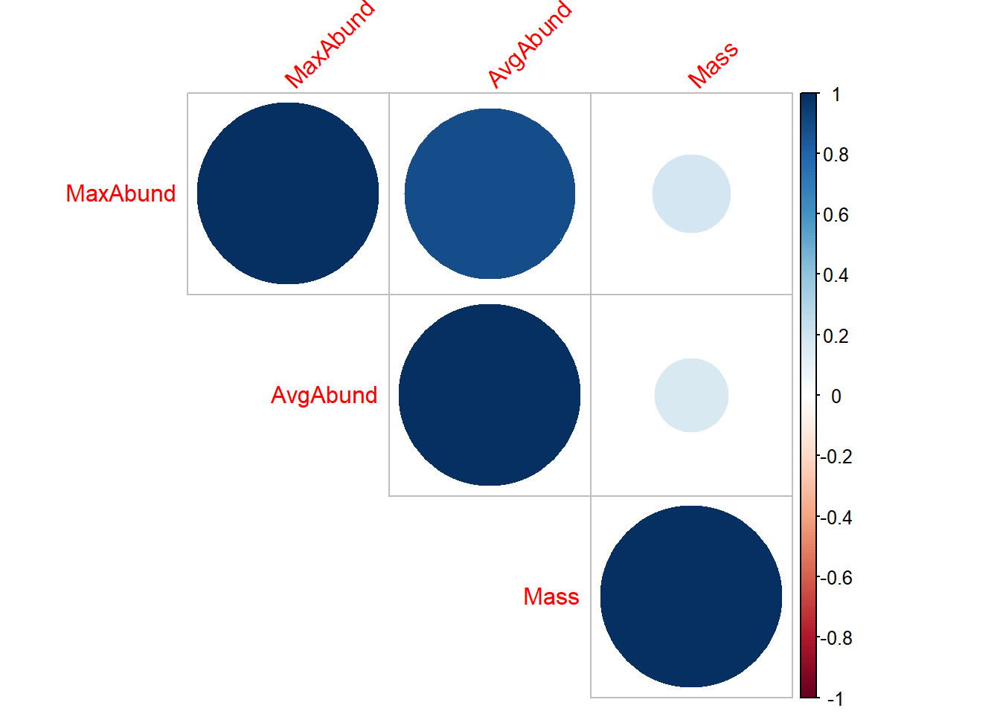
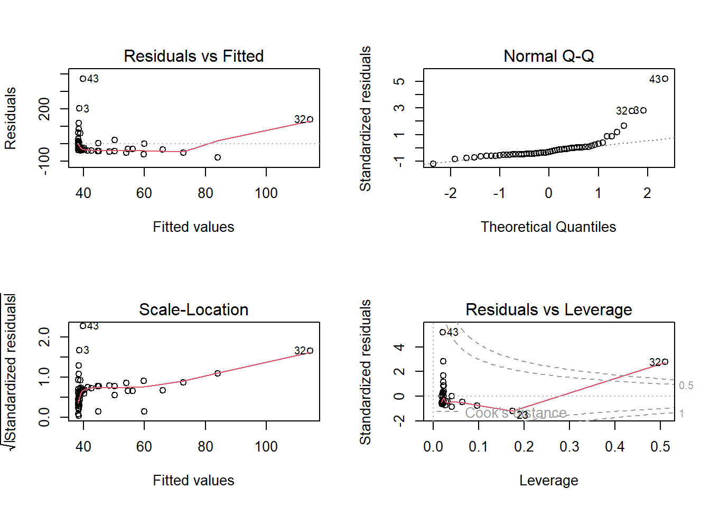
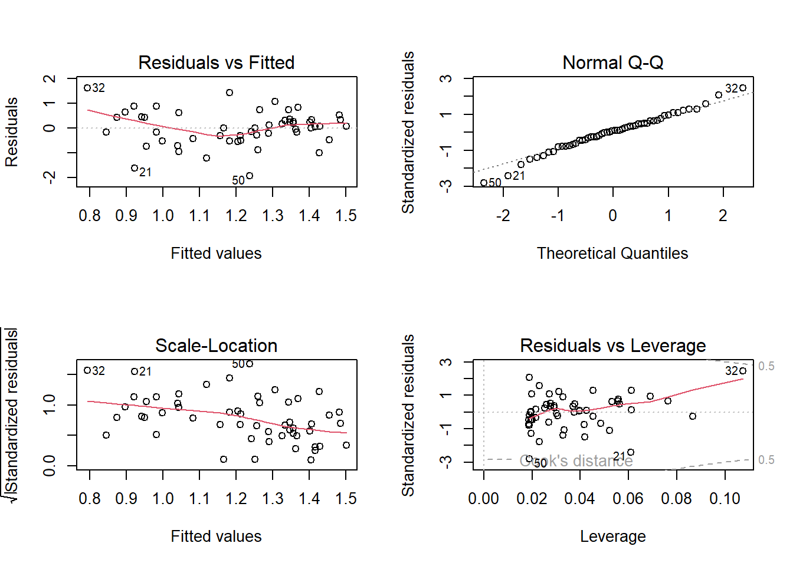

library(tidyverse)
knitr::opts_chunk$set(echo = TRUE, fig.align="center")
options(scipen = 999, pillar.print_max = Inf)
bird <- read_csv(file = "birdsdiet.csv")3. Statistical analysis in R
Learning Objectives
- learn how to conduct descriptive analysis in R
- learn how to run regression analysis in r
For this session, we will be working with the birdsdiet.csv dataset
This data contains abundance and mass of bird species, data is obtained online from https://r.qcbs.ca/workshops/
Dataset is used for demonstration purpose only
- display data
library(DT)
datatable(bird)str(bird)spc_tbl_ [54 × 7] (S3: spec_tbl_df/tbl_df/tbl/data.frame)
$ Family : chr [1:54] "Hawks&Eagles&Kites" "Long-tailed tits" "Larks" "Kingfishers" ...
$ MaxAbund : num [1:54] 2.99 37.8 241.4 4.4 4.53 ...
$ AvgAbund : num [1:54] 0.674 4.04 23.105 0.595 2.963 ...
$ Mass : num [1:54] 716 5.3 35.8 119.4 315.5 ...
$ Diet : chr [1:54] "Vertebrate" "Insect" "PlantInsect" "Vertebrate" ...
$ Passerine: num [1:54] 0 1 1 0 0 0 0 0 0 0 ...
$ Aquatic : num [1:54] 0 0 0 0 1 1 1 0 1 1 ...
- attr(*, "spec")=
.. cols(
.. Family = col_character(),
.. MaxAbund = col_double(),
.. AvgAbund = col_double(),
.. Mass = col_double(),
.. Diet = col_character(),
.. Passerine = col_double(),
.. Aquatic = col_double()
.. )
- attr(*, "problems")=<externalptr> 3.1 Descriptive Analysis
- Descriptive statistics
- measures of central tendency, variability, and distribution shape for continuous variables
- frequency counts for categorical variables
# basic summary using summary function;
summary(bird) Family MaxAbund AvgAbund Mass
Length:54 Min. : 0.200 Min. : 0.200 Min. : 5.30
Class :character 1st Qu.: 5.402 1st Qu.: 1.340 1st Qu.: 20.68
Mode :character Median : 24.147 Median : 3.114 Median : 59.18
Mean : 44.906 Mean : 5.686 Mean : 468.48
3rd Qu.: 43.581 3rd Qu.: 6.258 3rd Qu.: 461.73
Max. :413.600 Max. :47.598 Max. :5296.23
Diet Passerine Aquatic
Length:54 Min. :0.000 Min. :0.0000
Class :character 1st Qu.:0.000 1st Qu.:0.0000
Mode :character Median :0.000 Median :0.0000
Mean :0.463 Mean :0.2778
3rd Qu.:1.000 3rd Qu.:1.0000
Max. :1.000 Max. :1.0000 # updating binary and categorical variables to factors in R;
bird <- bird %>%
mutate(across(c(Family, Diet, Passerine, Aquatic), factor))
summary(bird) Family MaxAbund AvgAbund
Owls : 2 Min. : 0.200 Min. : 0.200
Anhingas : 1 1st Qu.: 5.402 1st Qu.: 1.340
Auks& Puffins : 1 Median : 24.147 Median : 3.114
Babblers : 1 Mean : 44.906 Mean : 5.686
Blackbirds & Orioles : 1 3rd Qu.: 43.581 3rd Qu.: 6.258
Cardinals& Buntings& Grosbreaks: 1 Max. :413.600 Max. :47.598
(Other) :47
Mass Diet Passerine Aquatic
Min. : 5.30 Insect :20 0:29 0:39
1st Qu.: 20.68 InsectVert : 2 1:25 1:15
Median : 59.18 Plant : 2
Mean : 468.48 PlantInsect:18
3rd Qu.: 461.73 Vertebrate :12
Max. :5296.23
# writing our own summary functions;
mysummary <- function(x, na.omit=FALSE){
x <- x[!is.na(x)]
m <- mean(x)
median <- median(x)
n <- length(x)
s <- sd(x)
skew <- sum((x-m)^3/s^3)/n
kurt <- sum((x-m)^4/s^4)/n - 3
return(c(n=n, mean=m, stdev=s, skew=skew, kurtosis=kurt))}
sapply(bird[,c("MaxAbund", "AvgAbund", "Mass")],mysummary) MaxAbund AvgAbund Mass
n 54.000000 54.000000 54.000000
mean 44.905769 5.686179 468.475673
stdev 73.468869 8.249669 945.410448
skew 3.167159 3.243436 3.146062
kurtosis 11.124409 11.820367 11.396989- We can use the
describe.by()function from thepsychpackage to generate summary statistics by group
library(psych)Warning: package 'psych' was built under R version 4.2.2
Attaching package: 'psych'The following objects are masked from 'package:ggplot2':
%+%, alphadescribe.by(bird[,c("MaxAbund", "AvgAbund", "Mass")], bird$Diet)Warning: describe.by is deprecated. Please use the describeBy function
Descriptive statistics by group
group: Insect
vars n mean sd median trimmed mad min max range skew
MaxAbund 1 20 33.34 40.38 17.94 25.38 21.49 0.2 157.88 157.68 1.61
AvgAbund 2 20 3.80 3.35 3.16 3.30 2.71 0.2 12.09 11.89 1.13
Mass 3 20 251.97 583.01 23.87 95.50 26.83 5.3 2400.00 2394.70 2.66
kurtosis se
MaxAbund 2.10 9.03
AvgAbund 0.18 0.75
Mass 6.51 130.36
------------------------------------------------------------
group: InsectVert
vars n mean sd median trimmed mad min max range skew
MaxAbund 1 2 3.42 1.57 3.42 3.42 1.64 2.32 4.53 2.22 0
AvgAbund 2 2 1.83 1.60 1.83 1.83 1.68 0.70 2.96 2.26 0
Mass 3 2 185.68 183.59 185.68 185.68 192.47 55.86 315.50 259.64 0
kurtosis se
MaxAbund -2.75 1.11
AvgAbund -2.75 1.13
Mass -2.75 129.82
------------------------------------------------------------
group: Plant
vars n mean sd median trimmed mad min max range skew
MaxAbund 1 2 28.15 18.78 28.15 28.15 19.68 14.88 41.43 26.55 0
AvgAbund 2 2 3.99 1.33 3.99 3.99 1.39 3.04 4.93 1.88 0
Mass 3 2 81.19 83.98 81.19 81.19 88.04 21.81 140.58 118.77 0
kurtosis se
MaxAbund -2.75 13.28
AvgAbund -2.75 0.94
Mass -2.75 59.38
------------------------------------------------------------
group: PlantInsect
vars n mean sd median trimmed mad min max range skew
MaxAbund 1 18 69.81 102.60 30.77 52.29 18.46 6.34 413.60 407.26 2.29
AvgAbund 2 18 8.36 10.95 5.01 6.35 3.15 1.34 47.60 46.26 2.63
Mass 3 18 143.39 314.43 32.55 89.04 27.79 12.18 1144.29 1132.11 2.36
kurtosis se
MaxAbund 4.48 24.18
AvgAbund 6.38 2.58
Mass 4.07 74.11
------------------------------------------------------------
group: Vertebrate
vars n mean sd median trimmed mad min max range
MaxAbund 1 12 36.53 72.04 4.58 18.26 6.07 0.20 255.65 255.45
AvgAbund 2 12 5.74 10.08 0.93 3.69 0.99 0.20 31.80 31.60
Mass 3 12 1428.61 1502.42 983.01 1172.78 780.58 119.37 5296.23 5176.85
skew kurtosis se
MaxAbund 2.29 4.16 20.79
AvgAbund 1.63 1.17 2.91
Mass 1.39 0.95 433.71- Frequency counts for categorical variables
table(bird$Diet)
Insect InsectVert Plant PlantInsect Vertebrate
20 2 2 18 12 table(bird$Diet, bird$Aquatic) #diet by whether or not the bird lives on or around water;
0 1
Insect 14 6
InsectVert 1 1
Plant 2 0
PlantInsect 17 1
Vertebrate 5 7xtabs(~Diet + Aquatic, data = bird) Aquatic
Diet 0 1
Insect 14 6
InsectVert 1 1
Plant 2 0
PlantInsect 17 1
Vertebrate 5 7- (Visual) Bar display of Abundance distribution
ggplot(bird) +
geom_bar(aes(x=Diet, y=AvgAbund, fill = Aquatic),
stat="identity",
position = position_dodge()) +
theme_minimal()
Measures of independence between
testing independence of the categorical variables
- chi-square test
- Fisher exact
- Cochran-Mantel–Haenszel (taking into account of confounding from a third variable)
# testing independence between Diet and Aquatic;
mytable <- xtabs(~Diet + Aquatic, data = bird)
chisq.test(mytable)Warning in chisq.test(mytable): Chi-squared approximation may be incorrect
Pearson's Chi-squared test
data: mytable
X-squared = 11.326, df = 4, p-value = 0.02313fisher.test(mytable)
Fisher's Exact Test for Count Data
data: mytable
p-value = 0.01129
alternative hypothesis: two.sidedmytable <- xtabs(~Diet + Aquatic + Passerine, data=bird)
mantelhaen.test(mytable)
Cochran-Mantel-Haenszel test
data: mytable
Cochran-Mantel-Haenszel M^2 = 3.2768, df = 4, p-value = 0.5126- Measures of correlations
- variety of correlation coefficients, including Pearson, Spearman, Kendall
- Pearson product moment correlation assesses the degree of linear relationship between two quantitative variables
- Spearman’s Rank Order correlation coefficient assesses the degree of relationship between two rank-ordered variables - nonparametric
- Kendall’s Tau is also a nonparametric measure of rank correlation
- we can also view correlation descriptively using correlation plots
- variety of correlation coefficients, including Pearson, Spearman, Kendall
cont_var <- bird[,c("MaxAbund", "AvgAbund", "Mass")]
cor(cont_var, method = "pearson") MaxAbund AvgAbund Mass
MaxAbund 1.0000000 0.8828926 0.1851167
AvgAbund 0.8828926 1.0000000 0.1661142
Mass 0.1851167 0.1661142 1.0000000cor(cont_var, method = "spearman") MaxAbund AvgAbund Mass
MaxAbund 1.0000000 0.9447282 -0.3262117
AvgAbund 0.9447282 1.0000000 -0.3333778
Mass -0.3262117 -0.3333778 1.0000000cor(cont_var, method = "kendall") MaxAbund AvgAbund Mass
MaxAbund 1.0000000 0.8097902 -0.2320867
AvgAbund 0.8097902 1.0000000 -0.2376791
Mass -0.2320867 -0.2376791 1.0000000# testing correlation significance;
cor.test(bird$MaxAbund, bird$Mass, method = "pearson", alternative = "two.side")
Pearson's product-moment correlation
data: bird$MaxAbund and bird$Mass
t = 1.3584, df = 52, p-value = 0.1802
alternative hypothesis: true correlation is not equal to 0
95 percent confidence interval:
-0.08695387 0.43148965
sample estimates:
cor
0.1851167 cor.test(bird$MaxAbund, bird$Mass, method = "spearman", alternative = "two.side")
Spearman's rank correlation rho
data: bird$MaxAbund and bird$Mass
S = 34793, p-value = 0.01607
alternative hypothesis: true rho is not equal to 0
sample estimates:
rho
-0.3262117 cor.test(bird$MaxAbund, bird$Mass, method = "kendall", alternative = "two.side")
Kendall's rank correlation tau
data: bird$MaxAbund and bird$Mass
z = -2.4769, p-value = 0.01325
alternative hypothesis: true tau is not equal to 0
sample estimates:
tau
-0.2320867 library(corrplot)
M <- cor(cont_var, method = "pearson")
corrplot(M,
method="circle",
type = c("upper"),
tl.srt=45) #Text label color and rotation; 
T-test, comparison of groups
A two-group independent t-test can be used to test the hypothesis that the two population means are equal
t.test(MaxAbund ~ Aquatic, data=bird)
Welch Two Sample t-test
data: MaxAbund by Aquatic
t = 0.46858, df = 30.457, p-value = 0.6427
alternative hypothesis: true difference in means between group 0 and group 1 is not equal to 0
95 percent confidence interval:
-32.55446 51.95678
sample estimates:
mean in group 0 mean in group 1
47.60054 37.89937 - Nonparametric tests of group difference
- If you’re unable to meet the parametric assumptions of a t-test or ANOVA, you can turn to nonparametric approaches,
- Thomogeneity of variance (i.e., the variability of the data in each group is similar).
- The distribution is approximately normal.
- e.g. Wilcoxon rank sum test (more popularly known as the Mann–Whitney U test)
- whether the observations are sampled from the same probability distribution (that is, whether the probability of obtaining higher scores is greater in one population than the other)
- If you’re unable to meet the parametric assumptions of a t-test or ANOVA, you can turn to nonparametric approaches,
wilcox.test(MaxAbund ~ Aquatic, data=bird)
Wilcoxon rank sum test with continuity correction
data: MaxAbund by Aquatic
W = 324.5, p-value = 0.543
alternative hypothesis: true location shift is not equal to 0- Comparing more than two groups
- ANOVA
- Kruskal-Wallis test, nonparametric
res.aov <- aov(MaxAbund ~ Diet, data=bird)
summary(res.aov) Df Sum Sq Mean Sq F value Pr(>F)
Diet 4 18688 4672 0.856 0.497
Residuals 49 267389 5457 kruskal.test(MaxAbund ~ Diet, data=bird)
Kruskal-Wallis rank sum test
data: MaxAbund by Diet
Kruskal-Wallis chi-squared = 8.6127, df = 4, p-value = 0.071543.2 Linear regression
What is regression?
using one or more predictor variables to model the distribution of one or more outcome variables
For a continuous outcome, we typically fit a linear regression model.
- Of course the relationship between outcome and predictors can be non-linear, in this case, we would consider fitting polynomial regression models or splines.
For a categorical outcome, we will fit a generalized linear regression. We will cover this topic in future sessions.
For a repeatedly measured outcome, we can fit a linear mixed-effect model (continuous outcome) or a generalized linear mixed-effect model (categorical outcome).
Normal Models and Linear Regression
Conditional normal model
- Given its mean and variance, an observation has a normal distribution
\[ Y_i \mid \mu_i, \sigma^2_i \sim N( \mu_i, \sigma^2_i) \]
- This is equivalent to the following statements
\[ Y_i = \mu_i + e_i , \ e_i \sim N(0, \sigma^2) \]
We do not assume the collection of \(Y_i, i=1, \ldots, n\) have a normal distribution
Instead we assume the error term is normally distributed - a lesser assumption!
In case of multiple predictors, \(\mu_i\) becomes a weighted average of the \(\beta_j\) values, the regression coefficient with \(x_{ij}\) denoting the predictors. For example, for two covariates we have
\[ E(y_i) = \mu_i = \beta_0 + \beta_1 x_{i1} + \beta_2 x_{i2} \]
- A polynomial regression model of 2 degrees on \(x_{i1}\)
\[ \mu_i = \beta_0 + \beta_1 x_{i1} + \beta_2 x_{i2} + \beta_3 x_{i1}^2 \]
- Assumptions of linear regression models
- Independent observations
- Linear relationship We can check this assumption by examining marginal plots comparing the model predicted relationship between outcome and each continuous predictor and by examining the residual plot.
- Normality of the residuals
- Homoscedasticity Homoscedasticity in a model means that the residual is constant along the values of the dependent variable.
- Multicollinearity Multicollinearity is the phenomenon when a number of the explanatory variables are strongly correlated.
- Correctly specified regression model This means that all relevant predictors for the response variable have been included in the model. This is often difficult to verify, but we can use posterior predictive distribution to check for regression fit.
- Example: Suppose we are interested to study the linear relationship between abundance and mass
# Linear regression of maximum abundance against mass
m1 <- lm(MaxAbund ~ Mass, data = bird)
summary(m1)
Call:
lm(formula = MaxAbund ~ Mass, data = bird)
Residuals:
Min 1Q Median 3Q Max
-79.30 -35.39 -22.06 2.62 373.72
Coefficients:
Estimate Std. Error t value Pr(>|t|)
(Intercept) 38.16646 11.09065 3.441 0.00115 **
Mass 0.01439 0.01059 1.358 0.18021
---
Signif. codes: 0 '***' 0.001 '**' 0.01 '*' 0.05 '.' 0.1 ' ' 1
Residual standard error: 72.89 on 52 degrees of freedom
Multiple R-squared: 0.03427, Adjusted R-squared: 0.0157
F-statistic: 1.845 on 1 and 52 DF, p-value: 0.1802# Verify regression assumptions using diagnostic plots
par(mfrow = c(2, 2))
plot(m1)
Plot 1, Residuals vs Fitted shares information about the independence assumption
- residuals should scattered randomly around the line of 0
- indicating linear relationship and the mean of the residuals is 0.
- residuals form an approximate horizontal band around the 0 line
- indicating homogeneous
- If the residuals are organized in a funnel shape, the residuals are not homoscedastic.
- residuals should scattered randomly around the line of 0
Plot 2, QQ plot, assessing normality
Plot 3, Scale location checks for residual variability and dispersion - homoscedasticity
- a visble trend is problematic
Plot 4, Residuals vs Leverage is used to identify influential observations, in other words, outliers.
# testing normality of residuals using Shapiro-Wilk test;
# The Shapiro-Wilk test compares the distribution of the observed data to a normal distribution.
shapiro.test(residuals(m1))
Shapiro-Wilk normality test
data: residuals(m1)
W = 0.64158, p-value = 0.0000000003172- Update model
- potential strategies: log-transform data, fitting non-linear regression
# log-transform the variables
bird$logMaxAbund <- log10(bird$MaxAbund)
bird$logMass <- log10(bird$Mass)
m2 <- lm(logMaxAbund ~ logMass, data = bird)
summary(m2)
Call:
lm(formula = logMaxAbund ~ logMass, data = bird)
Residuals:
Min 1Q Median 3Q Max
-1.93562 -0.39982 0.05487 0.40625 1.61469
Coefficients:
Estimate Std. Error t value Pr(>|t|)
(Intercept) 1.6724 0.2472 6.767 0.0000000117 ***
logMass -0.2361 0.1170 -2.019 0.0487 *
---
Signif. codes: 0 '***' 0.001 '**' 0.01 '*' 0.05 '.' 0.1 ' ' 1
Residual standard error: 0.6959 on 52 degrees of freedom
Multiple R-squared: 0.07267, Adjusted R-squared: 0.05484
F-statistic: 4.075 on 1 and 52 DF, p-value: 0.04869par(mfrow = c(2, 2))
plot(m2)
we observed improvement!
- Beyond simple linear regression one can fit multivariate regression
- In multivariate regression, model building also need to consider variable selection and model fit
- stepwise model selection, forward/backward, LASSO
- AIC, BIC